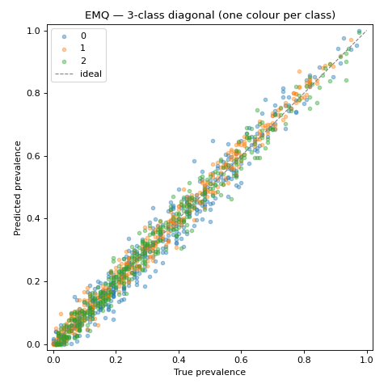
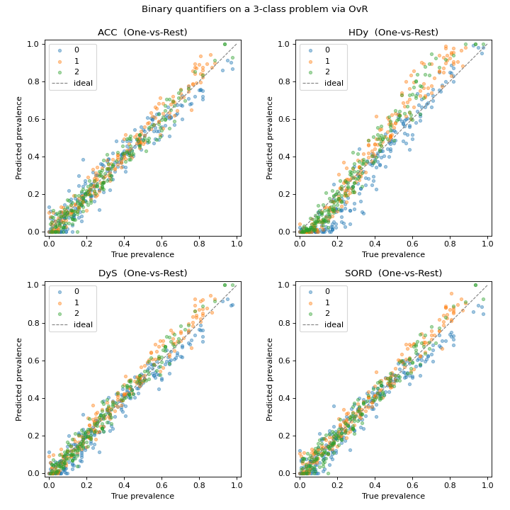

Multiclass quantification#
Every quantifier in mlquantify handles more than two classes. Native
multiclass methods (CC,
PCC, EMQ, the KDEy
family, the generalized matching methods) work on the full simplex directly.
Binary methods — ACC,
HDy, DyS,
SORD and the threshold-selection counters — are
decomposed into a set of binary sub-problems automatically, using One-vs-Rest.
The diagnostics carry over either way.
Native multiclass methods#
We start with EMQ, evaluate it across many
prevalence vectors with a UPP, and show a
per-class diagonal plot.
from sklearn.datasets import make_classification
from sklearn.linear_model import LogisticRegression
from mlquantify.likelihood import EMQ
from mlquantify.model_selection import apply_protocol
from mlquantify.visualization import DiagonalDisplay
X, y = make_classification(
n_samples=4500, n_features=20, n_informative=6,
n_classes=3, n_clusters_per_class=1, random_state=0,
)
q = EMQ(LogisticRegression(max_iter=1000))
results = apply_protocol(
q, X, y, protocol="upp",
n_prevalences=400, batch_size=120, random_state=0,
)
# DiagonalDisplay colour-codes the three classes on one axes for multiclass.
disp = DiagonalDisplay.from_predictions(
results["true_prevalences"], results["predicted_prevalences"],
alpha=0.4, s=16,
)
disp.ax_.set_title("EMQ — 3-class diagonal (one colour per class)")
disp.figure_.set_size_inches(6, 6)
disp.figure_.tight_layout()

Each class gets its own colour; all three clouds hug the diagonal, confirming EMQ recovers the full prevalence vector and not just one class.
Binary methods via One-vs-Rest#
A binary quantifier cannot, by itself, estimate three prevalences. Under
One-vs-Rest the problem is split into “class \(k\) vs. the rest” for
every class; each sub-quantifier estimates the prevalence of its own class, and
the results are normalised to sum to one. mlquantify does this transparently:
you just fit and predict the binary method exactly as in the binary case —
One-vs-Rest is applied automatically, since it is the default decomposition. No
manual class loop, no extra configuration.
The grid below runs four binary methods on the same three-class problem.
import matplotlib.pyplot as plt
from sklearn.datasets import make_classification
from sklearn.linear_model import LogisticRegression
from mlquantify.counting import ACC
from mlquantify.matching import HDy, DyS, SORD
from mlquantify.model_selection import apply_protocol
from mlquantify.visualization import DiagonalDisplay
X, y = make_classification(
n_samples=4500, n_features=20, n_informative=6,
n_classes=3, n_clusters_per_class=1, random_state=0,
)
# All four are binary quantifiers — they only know "positive vs. rest".
methods = {
"ACC": ACC(LogisticRegression(max_iter=1000)),
"HDy": HDy(LogisticRegression(max_iter=1000)),
"DyS": DyS(LogisticRegression(max_iter=1000)),
"SORD": SORD(LogisticRegression(max_iter=1000)),
}
fig, axes = plt.subplots(2, 2, figsize=(9, 9))
for (name, q), ax in zip(methods.items(), axes.ravel()):
# No manual decomposition: the binary method handles 3 classes via OvR.
results = apply_protocol(
q, X, y, protocol="upp",
n_prevalences=200, batch_size=120, random_state=0,
)
DiagonalDisplay.from_predictions(
results["true_prevalences"], results["predicted_prevalences"],
ax=ax, alpha=0.4, s=14,
)
ax.set_title(f"{name} (One-vs-Rest)")
fig.suptitle("Binary quantifiers on a 3-class problem via OvR", y=0.99)
fig.tight_layout()

Despite being binary at heart, all four methods track the diagonal across the
whole simplex: One-vs-Rest extends them to three classes with no change to your
code. Each sub-quantifier estimates the prevalence of its own class, and
mlquantify normalises the per-class estimates so the prediction stays a
valid prevalence vector.
See also
Confidence intervals and regions — a ternary confidence ellipse for these simplex-valued predictions.
Comparing quantifiers with diagonal plots — the same methods on a binary problem.